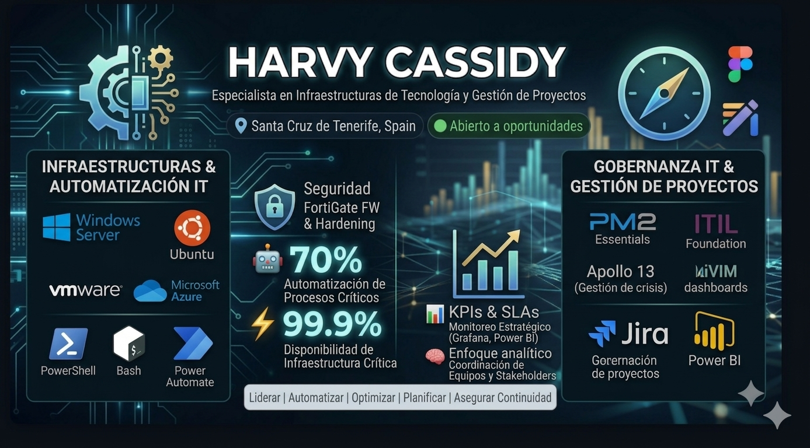

🧠 Propuesta de Valor
Administrador de Sistemas Informáticos en Red especializado en infraestructuras on-premise e híbridas (Microsoft/Linux) y virtualización (VMware/Hyper-V). Experto en la optimización operativa mediante la automatización de procesos con PowerShell, Bash y Power Automate.
Gracias a mi formación en gestión de proyectos (PM2) y de servicios (ITIL), aporto una visión integral en la planificación, ejecución y seguridad de entornos TI. Poseo un perfil autodidacta y resolutivo, orientado a la mejora continua y a la integración de la IA para maximizar la eficiencia tecnológica.
Mi Enfoque - 4 Pilares Fundamentales
⚙️ Automatización
Reducir carga operativa y errores humanos mediante scripting y automatización de procesos.
🔐 Seguridad
Proteger infraestructura y datos críticos con hardening y políticas de seguridad robustas.
📊 Optimización
Mejorar rendimiento y disponibilidad mediante monitorización proactiva y tuning.
📋 Gestión de Proyectos IT
Planificación, ejecución y seguimiento mediante KPIs, SLAs y metodologías ágiles.
💼 Experiencia Laboral
Administrador de Sistemas Informáticos en Red
📋 Responsabilidades y Logros
- Infraestructura: Gestión de 60 servidores (Win/Lin) y cabinas Dell EMC, garantizando un SLA del 99.9%
- Automatización: Optimización del Active Directory mediante PowerShell, automatizando auditorías de cuentas y reportes de cumplimiento mensual
- Monitorización: Implementación de dashboards en Grafana/Power BI para seguimiento de incidentes y redes en tiempo real
- Migraciones: Apoyo técnico en virtualización de servidores SAP y despliegue de firewalls FortiGate (SQL Server y configs. de red)
- ITSM: Soporte en la migración de GLPI a ServiceNow, gestionando la integridad de datos mediante consultas SQL
🚀 Impacto Real en Negocio
Durante mi trayectoria profesional, he transformado indicadores técnicos en resultados de negocio medibles. Estos KPIs reflejan el impacto generado en entornos de alta criticidad operativa:
📊 Traducción a Valor de Negocio
Menos horas hombre en tareas repetitivas = mayor ROI del equipo IT
99.9% uptime = sin pérdidas por paradas de sistemas críticos
20% capacidad liberada = equipo puede asumir nuevos proyectos sin ampliar plantilla
🧩 Especialización Técnica
💻 Sistemas Operativos
🌐 Redes y Seguridad
🖥️ Directory Services & Identidad
🖥️ Virtualización y Plataformas
🖥️ Alta Disponibilidad
🖥️ Publicación de Aplicaciones
🖥️ Gestión y Actualización
⚙️ Automatización
📊 Monitorización
🗄️ Bases de Datos
🛠️ Gestión de Servicios
🗄️ Almacenamiento y SAN
🧾 SAP Basis (Intermedio)
🧠 Gestión de Proyectos y Calidad
🏗️ Proyectos Estratégicos
🔒 Migración y Modernización de Infraestructura Crítica
⚠️ Problema
Infraestructura legacy con riesgos de seguridad, configuraciones no estandarizadas y alta criticidad operativa.
✅ Acción
- Lideré la virtualización del ERP SAP en entorno productivo
- Migración de sistemas on-premise de alto riesgo a infraestructura moderna
- Migración de firewalls FortiGate sin interrupciones
- Rediseño de políticas de seguridad y segmentación de red
📈 Resultado
- Continuidad operativa sin impacto en negocio
- Reducción de superficie de ataque
- Mejora significativa en seguridad perimetral
- Infraestructura más resiliente y escalable
🎯 Impacto Clave
🤖 Automatización y Optimización Operativa
⚠️ Problema
Alta carga de tareas manuales, procesos repetitivos y baja eficiencia operativa.
✅ Acción
- Desarrollo de automatizaciones con PowerShell y Bash
- Optimización de procesos administrativos y operativos
- Implementación de soluciones basadas en IA para toma de decisiones
- Automatización para planificación de recursos, auditorías y resolución predictiva
📈 Resultado
- Reducción de tareas manuales en más del 70%
- Liberación del 20% de la capacidad del equipo
- Mejora significativa en eficiencia operativa
🎯 Impacto Clave
📊 Monitorización Avanzada y Gestión de Incidencias
⚠️ Problema
Detección tardía de incidencias y tiempos de respuesta elevados.
✅ Acción
- Implementación de dashboards en Grafana y herramientas de monitorización avanzada
- Configuración de alertas proactivas
- Seguimiento mediante KPIs y SLAs
- Coordinación de equipo técnico (7 especialistas)
📈 Resultado
- Reducción del MTTD en un 40%
- Disminución del tiempo de respuesta en un 60%
- SLA mantenido en 99.9% de uptime
- Mayor estabilidad y resiliencia del sistema
🎯 Impacto Clave
📋 Metodología y Gobernanza TI
Mi enfoque profesional integra la agilidad operativa con el rigor de la gestión de proyectos para garantizar infraestructuras resilientes y alineadas con los objetivos de negocio:
🔄 Marcos de Trabajo & Agilidad
Aplicación de metodologías ágiles (Scrum/Kanban) para gestión eficiente del backlog técnico y PM2 Essentials para gobernanza estructurada de proyectos complejos.
📊 Cultura Data-Driven
Especialista en elaboración de cuadros de mando en Grafana y Power BI para seguimiento de KPIs críticos, control de SLAs y reporte ejecutivo de avances, desviaciones y bloqueos.
📚 Gestión del Conocimiento
Liderazgo en estandarización de activos mediante creación y mejora de políticas, procedimientos y documentación técnica del departamento IT.
💬 Comunicación Estratégica
Experiencia transformando datos técnicos en insights accionables para la toma de decisiones y optimización de recursos.
📈 Mejora Continua (Kaizen)
Enfoque proactivo orientado a resultados numéricos, detectando cuellos de botella y asegurando la culminación exitosa de cada fase del proyecto.
🎯 Alineación con Negocio
Infraestructuras resilientes diseñadas para soportar objetivos de negocio y garantizar continuidad operativa.
🎓 Formación y Certificaciones
Técnico Superior en Administración de Sistemas en Red (ASIR)
DIGITECHFP | 2025-2027
PM2 Essentials - TecnoFor
Gestión de proyectos TI estructurada
Inteligencia Artificial Generativa - TecnoFor
Aplicación de IA en entornos empresariales
Apollo 13 (Gestión de Crisis) - TecnoFor
Simulación y resolución de crisis operativas
Microsoft Certified Professional (MCP)
ID: 3357452 | Certificación Microsoft oficial
Idiomas
Inglés — B2 (Intermedio alto)
📬 Contacto
Información de Contacto
Disponibilidad
🟢 Abierto a oportunidades en: